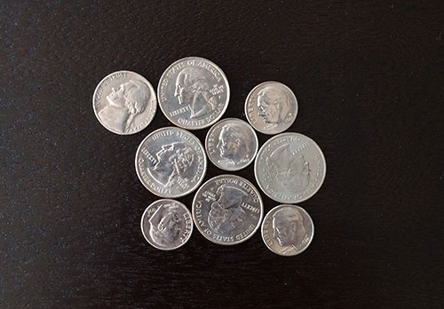

Algoritimo de WaterShed
Contexto
O algoritmo de WaterShed introduzido no inicio dos anos 90 por F. Meyer possui uma aplicação significativa na área de processamento de imagem, em específico na parte de segmentação de imagem.
O algoritmo
O algoritmo recebe como entrada uma imagem em greyscale, ou seja, em tons de cinza. Ele interpreta essa imagem como um mapa topográfico em que os píxeis vizinhos de mesmo tom são como curvas de nível.
varias coloi

Os níveis de menor valor são preenchidos como uma "piscina" e quando as "piscinas" se encontram é delimitada uma barreira na imagem.

Exercício 1

Queremos separar todas as moedas dessa imagem. O watershed pode causar algum problema nessa segmentação em que os objetos são maiores?
continuar ou terminar
img supersegmentadaaaaaaaaaa
Exercício 2
Como é possível sulicionar esse problema?
continuar ou terminar
É possível adicionar marcadores com uma segunda imagem de entrada com as mesmas dimensões da imagem a ser segmentada contendo pontos/marcadores onde são localizados os centros das áreas conectadas. Esses pontos geralmente correspondem aos mínimos locais da imagem de entrada.

Implementação: